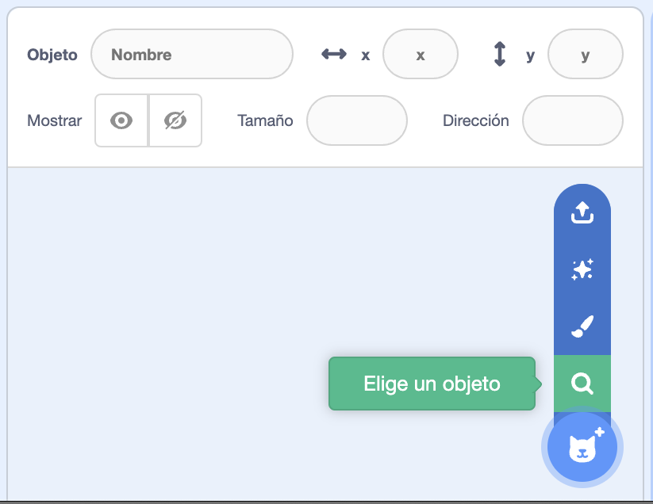
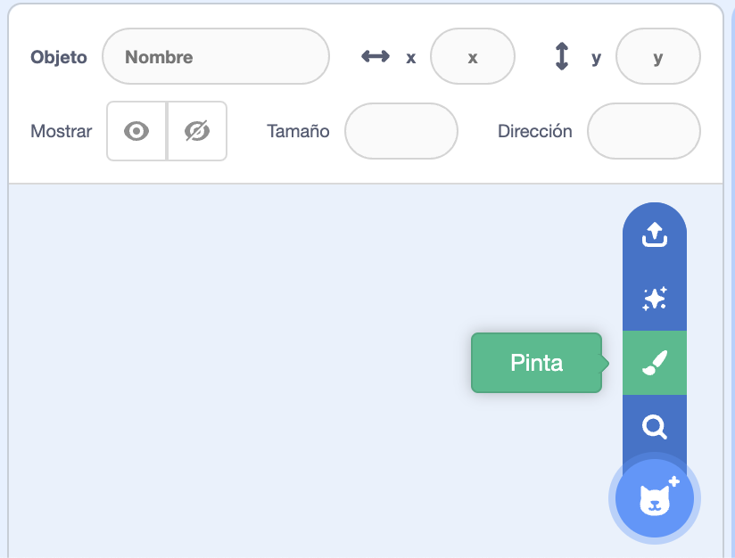
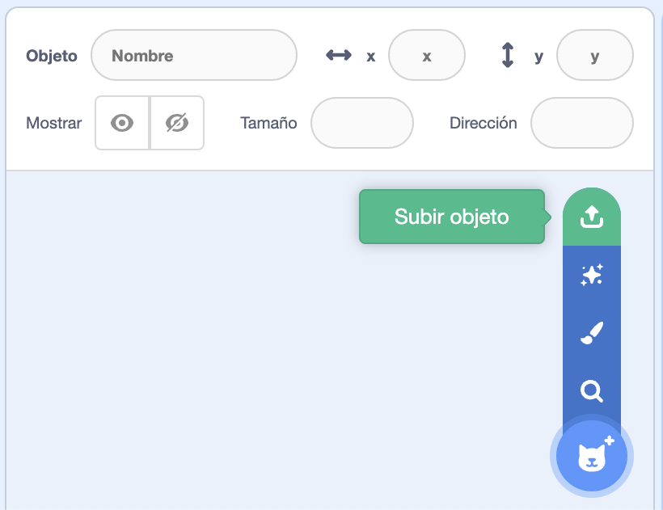

Una vez que te has adentrado en como se pueden subir, modificar o elegir un escenario (fondo), es el momento de aprender como son esos elementos que se mueven y cobran vida en los proyectos de scracth.
Estos elementos se denominan Sprites u objetos.
1. Parece igual pero no lo es
Una vez que te has adentrado en como se pueden subir, modificar o elegir un escenario (fondo), es el momento de aprender como son esos elementos que se mueven y cobran vida en los proyectos de scracth.
Estos elementos se denominan Sprites u objetos.
2. Objeto a objeto
Aunque también se denomina sprite, tu lo vas a conocer como objeto.
A continuación te propongo una serie de ejercicios, para que comprendas mejor, para que sirve cada una de las opciones del menú de objetos.
Hazlos tu ritmo y no te preocupes si te atrancas en alguno, es algo normal.
Opción A: ¿Con cuál te quedas?
En la imagen que hay a continuación, puedes ver donde hay que pulsar con el ratón para poder acceder a la biblioteca de objetos de Scracth.
Pulsa como se indica y te aparecerán un montón de objetos, puedes ver que están ordenado por categorías e incluso hay un buscador.
Puedes enseñarle a tus compañeros o compañeras de clase los objetos que has elegido.

Lumen dice No sabes cuál elegir
Te propongo una especie de juego.
Quizás no te hayas decidido por un objeto en concreto, pues no te preocupes. Pulsa el botón de la estrella y a ver que aparece ...
Repítelo tantas veces como quieras.
Opción B: ¿Lo pintas?
Algunas veces, no encuentras el objeto que deseas o que tienes en mente para tu proyecto.
En este ejercicio, debes de pulsar sobre el botón de pintar y con la ayuda de las herramientas que aparecen, tienes que dibujar un objeto para tu proyecto.

Opción C: Haz uno
Existe un última opción, para poder tener el objeto que deseas en tu proyecto.
Esta opción es la de subir un archivo con ese objeto. Haz un dibujo de un objeto.
Pulsa sobre el botón que indica la imagen siguiente y sube el fichero que contiene el objeto que vas a usar en tu proyecto.

Lumen dice ¿No sabes cómo subirlo?
Pide ayuda a tu profesor para que te escaneé el dibujo y te lo mande a tu correo.
Asi puedes tener el fichero para subirlo a tu proyecto.